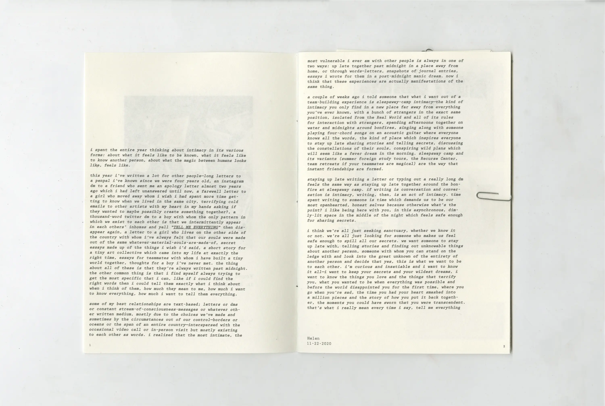
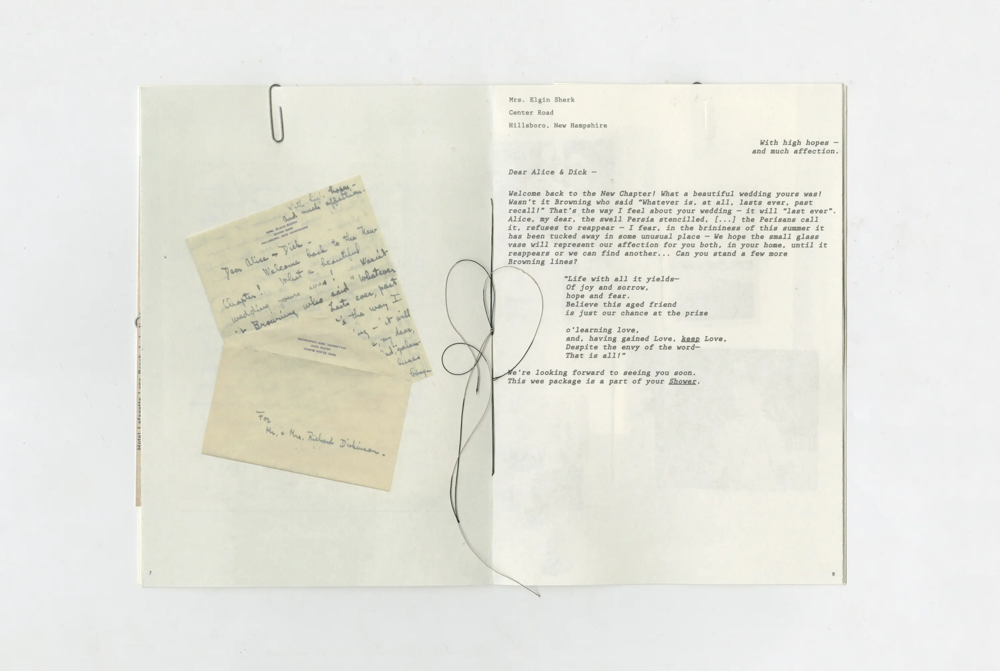
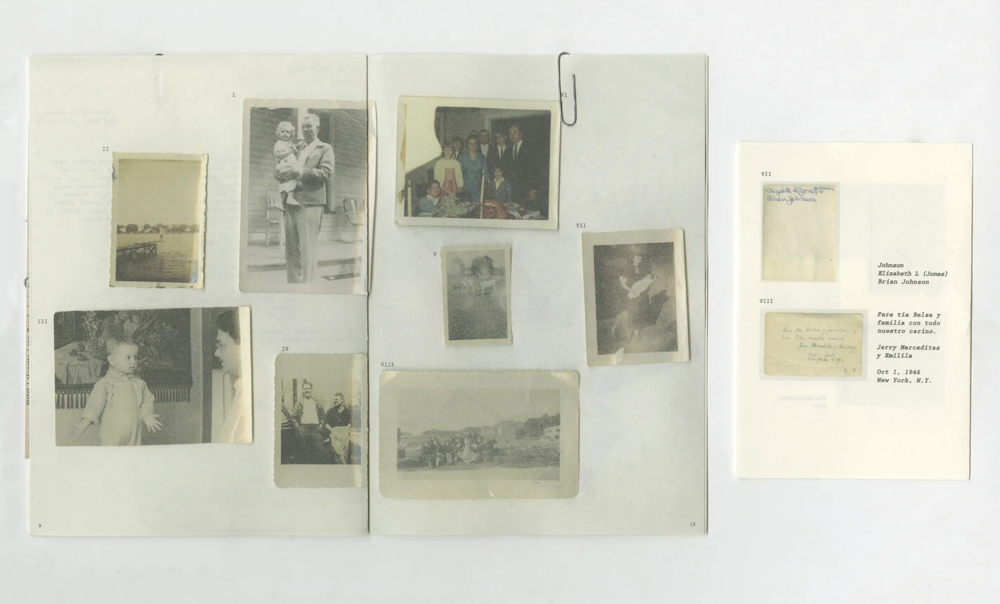
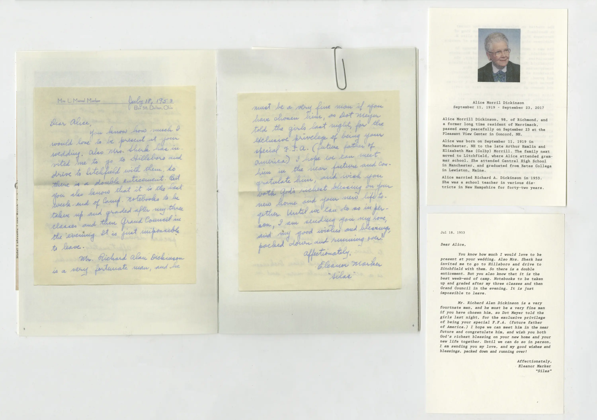

Found Homes
Print
2024
A book exploring letters, postcards, and photographs found at thrift stores and flea markets. I wanted to rediscover the lives of these people, including inserts that use external sources to provide information on the people and transcribe the letters.
2024
A book exploring letters, postcards, and photographs found at thrift stores and flea markets. I wanted to rediscover the lives of these people, including inserts that use external sources to provide information on the people and transcribe the letters.